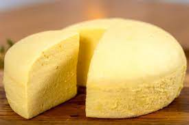

Bolu Kukus

Description
Have you been troubled by steamed sponge cakes collapsing or turning into pancakes? I would like to share with you a little steaming tip that I got after countless failures. Without baking powder or baking soda, you can get an almost perfect steamed sponge cake. This cake is made using the separated eggs method. The cake has a delicate texture, a soft and fluffy taste, and the aroma of eggs and butter. The good thing about steamed cake is not getting heatiness when you eat more!
Ingredient
- 2 Egg Yolks
- 35 g All Purpose Flour
- 10 g Corn Starch
- 35 g Milk
- 25 g Butter
- 2 Egg Whites
- 20 g Caster Sugar
- A few drops of Lemon Juice/White Vinegar
Steps
- Add enough water to the steamer and turn on the heat to preheat the steamer.
- Prepare cake mold, spread a thin layer of butter or put baking paper for later use.
- After melting the butter, add milk and mix well.
- Separate the egg yolks and whites, and put the yolks in a bowl of butter and milk. Put the egg whites into a large bowl that is free of oil and water.
- Stir the egg yolks and mix evenly.
- Add sifted all purpose flour and corn starch to the egg yolk’s bowl, and mix until there is no dry powder.
- Add a few drops of lemon juice or white vinegar to the egg whites.
- Beat with a high speed until the egg whites have large bubbles, add 1/3 caster sugar, and then continue to beat at high speed.
- Add 1/3 caster sugar after the bubbles are smaller, and then continue to beat at high speed.
- After the bubbles turned fine, add the remaining caster sugar, and continue to beat until the foam is hard and got stiff peaks.
- Scoop 1/3 of the meringue into the egg yolk batter and stir evenly with the folding method.
- Pour the mixed egg yolk batter into the meringue in batches and mix evenly with the folding method.
- Pour the mixed batter into the mold, knock it a few times to release out large bubbles.
- Put it into a boiling steamer. Close the lid slightly slant and leave a gap, steam on medium heat for 40 minutes, then turn off the heat and leave for 5 minutes.
- After the steaming, unmold it and let it cool. Cut into the size you like.